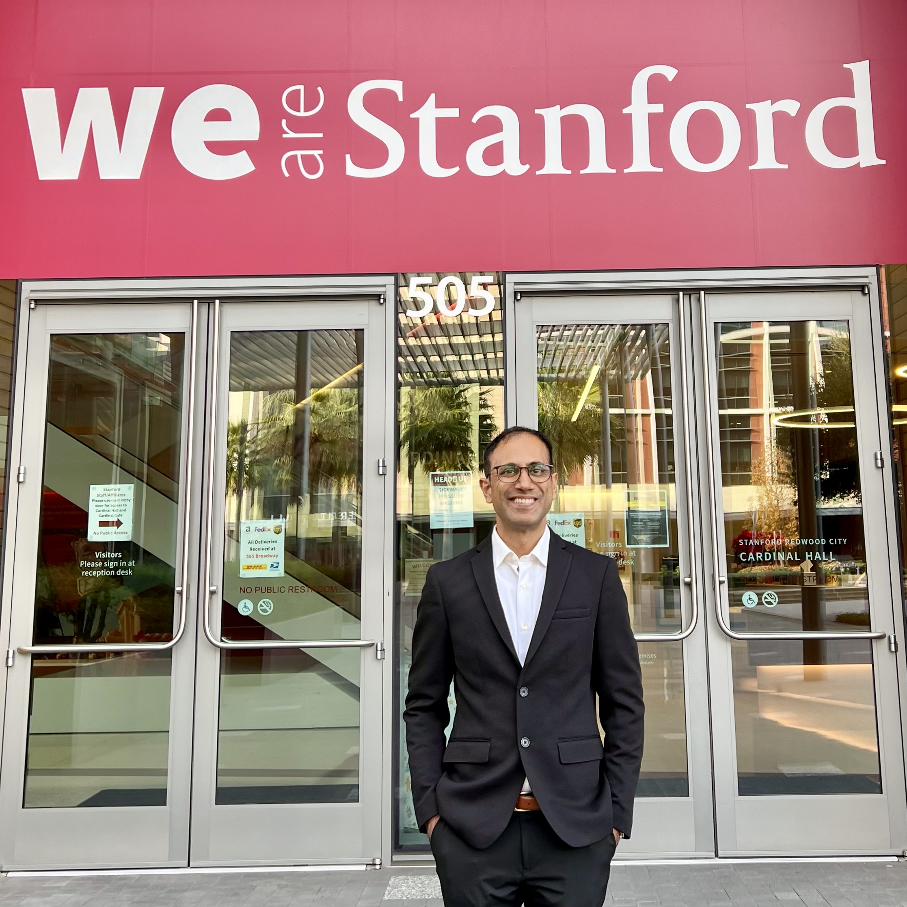

About the Lab
About the Lab
The Scientific Computing Lab was founded to explore computational methods for solving complex quantitative problems.
We love numbers, and understanding how different numbers relate to each other. We love rapid calculations using novel computational methods. We enjoy advancing machine learning and artificial intelligence, and understanding how these tools can be used to solve scientific and engineering problems.
Quantitative finance is an area that lends itself naturally to our study because of the richness of the available data. The fact that real money is at stake raises the bar even higher—it’s no longer just about numerical stability, accuracy, and speed of computation. Real money is made or lost depending on the efficacy of our systems. This serves as the ultimate validation of whether what we are building works or not.
Our philosophy of engineering is simple. We hope to build systems that endure, and are flexible and swappable. We may build sophisticated foundations, but we aspire to build our systems in a way that novel strategies and research ideas may be developed and tested with minimal additional effort.
Because much of our work is in computational science and numerics, we also place great emphasis on reproducibility and rigor. We believe research should be transparent, repeatable, and built on sound engineering principles.
Through this website we hope to share some of the work we do—both to democratize access to advanced computational methods and to invite constructive comments from researchers, engineers, and quantitative practitioners that help improve our methods.
Over the long term, we hope to grow this into a collection of quantitative research projects, computational methods, visualizations, and software that students, researchers, and practitioners can learn from.
Karthik Palaniappan
Founder
Scientific Computing Lab, August Academy

I started my research career at Stanford University as a PhD student and Research Assistant, where I developed numerical algorithms for optimizing the design and control of aircraft. Through this work I developed expertise in solving complex nonlinear partial differential equations, computational fluid dynamics, optimization, high-performance scientific computing, and scientific software development.I graduated with my PhD in 2007. During my time at Stanford, I worked under Professor Antony Jameson, one of the pioneers of Computational Fluid Dynamics. Our work resulted in several publications in the Journal of Aircraft and presentations at major AIAA conferences.
The next part of my career was in corporate research and software development across the aerospace and automotive industries, including General Motors. I worked on numerical simulation, reduced-order modelling, optimization, and scientific software development. I also wrote research proposals, managed research collaborations, and worked with multidisciplinary teams spread across multiple countries.
Since 2013, I’ve bootstrapped a business in education consulting through August Academy. Over the past decade, we’ve helped hundreds of Indian candidates gain admission to leading MBA programs around the world, including Harvard Business School, MIT, Kellogg, London Business School, INSEAD, ISB, and IIM Ahmedabad.
Running August Academy also gave me an opportunity to experiment with automation, artificial intelligence, and software systems in a real business environment. We were early adopters of AI and automation across marketing, sales, customer onboarding, scheduling, finance, and internal operations. Building scalable systems for a small business turned out to be an excellent engineering education in its own right.
More recently, I completed a one-year Certificate Program in Computational Data Science at the Indian Institute of Science, Bangalore, followed by QuantInsti’s EPAT program in Algorithmic Trading.
Today, the Scientific Computing Lab brings together these different experiences. In many ways, this is a return to my original research interests—but with a different application domain. I find quantitative finance particularly exciting because ideas can be validated rapidly against real markets. The fact that real capital is involved raises the stakes considerably, making it one of the most demanding and rewarding environments for computational research.
Research Interests
My current interests include:
- Scientific Computing
- Numerical Algorithms
- Optimization
- Machine Learning
- Research Software
- Quantitative Finance
- Market Microstructure
- Feature Engineering
- Financial Data Visualization
- High-Performance Computing
Selected Publications
A complete list of publications is available on my Stanford webpage and will also be made available through this website.
Representative publications include:
- Design of Adjoint Based Laws for Wing Flutter Control — Journal of Aircraft (2011)
- Bodies Having Minimum Pressure Drag in Supersonic Flow Investigating Nonlinear Effects — Journal of Aircraft (2010)
- Optimal Control of LCOs in Aero-Structural Systems — AIAA (2006)
- Feedback Control of Aerodynamic Flows — AIAA (2006)
A complete publication list will be added to the website shortly.